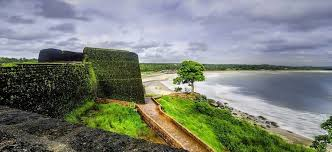
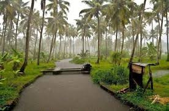
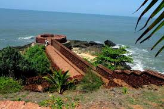
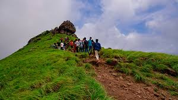

Keralatourism
The Heart of Kasaragod Culture
Welcome To Kasaragod
Rich cultural tapestry, historic forts, tranquil backwaters, and natural beauty
Top tourist places in Kasaragod, Kerala, known for their scenic beauty, historical importance, and cultural richness
Top Attractions & Natural Sites
Bekal Fort
The largest and best-preserved sea fort in Kerala, built in 1650 AD by Shivappa Nayaka. It spans 40+ acres, features a zig-zag entrance, trenches, watchtower built by Tipu Sultan, and offers panoramic views of the Arabian Sea and surrounding coastline
Chandragiri Fort & Backwaters
Located at the confluence of the Chandragiri River and the sea. The 17th-century fort stands 150 ft above sea level, surrounded by ruins, trenches, cannon bastions, and remnants of barracks. The adjacent backwaters offer serene boat cruises through palm groves and estuaries




